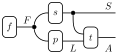

Drawing Inferences
Preface
Welcome to Drawing Inferences − a course on model-based reasoning! This course aims to teach statistical modeling in an intuitive and accessible manner. Our approach will be…
- Principled — We build strong foundations. We motivate every step. We value conceptual clarity over computational efficiency.
- Code-based — We write code instead of formulas. We run simulations instead of calculating.
- Compositional — We build models out of simple parts. We refine our models by tinkering.
- Visual — We draw model structure. We give visual proofs. We plot results.
In jargon, we will build (causal) probabilistic graphical models and solve them using probabilistic programming.
Introduction
Life confronts us with fundamental questions on a daily basis:
- What’s happening? (Perception)
- Why is it happening? (Explanation)
- What should we do about it? (Action)
This course is about finding explanations and choosing actions in situations we don’t fully understand. We will do so by building probability models and drawing inferences from them.
Models serve as explanations for what we are observing. They also predict likely outcomes of our actions and tell us what additional information is worth acquiring. Modeling is especially useful when situations are complex, the outcomes of decisions particularly important, or when we want to convince others of our conclusions.
We will value models whose parts have clear interpretations and encode domain knowledge. This allows us to extract more information with less training data. Generally, our techniques will work well for datasets with \(10\) to \(10^4\) datapoints.
Contents
The contents pf the course intersect and unify the following areas:
- Bayesian statistics
- Causal modeling
- Probabilistic machine learning
- Decision theory
Much of the material can be found in the following books, although the presentation will differ from these sources:
Applied Bayesian statistics:
- Bayesian data analysis (Gelman et al. 2013) (online)
- Statistical rethinking (McElreath 2018) (online)
Graphical models and inference algorithms:
- Artificial intelligence: a modern approach (Part IV) (Russell and Norvig 2021) (online)
- Probabilistic machine learning 1 & 2 (Murphy 2022, 2023) (online)
- Pattern recognition and machine learning (Bishop 2006) (online)
Decision theory using graphical models:
- Algorithms for decision making (Kochenderfer, Wheeler, and Wray 2022) (online)
Causal modeling:
- Causality (Pearl 2009) (online)
Prerequisites
The only prerequisite is some familiarity with programming (in any language). We will be coding in Python. All of the syntax will be introduced along the way.
Guiding principles
Learning statistics can be a bumpy ride. To make things smoother, we will stick to the following values.
We build strong foundations. We motivate every step. We value conceptual clarity over computational efficiency.
Statistics and machine learning is often presented as a collection of disparate techniques. This apparent lack of unity impedes understanding. In contrast, we will derive everything from solid foundations.
We write code instead of formulas. We run simulations instead of calculating.
Mathematical prerequisites exclude many people who could benefit from modeling. We will avoid complex math by focusing on coding and simulation.
We build models out of simple parts. We refine our models by tinkering.
We will decompose complex models into manageable parts. This reduces modeling to understanding:
- Simple components
- Patterns of interconnection
- Methods for solving the resulting program
Most of the course will involve learning new components, patterns for combining them, and increasingly sophisticated methods for performing inference.
We draw model structure. We give visual proofs. We plot results.
We will learn a powerful visual language for drawing models, based on string diagrams. This language will allow us to reason about models in the form of visual proofs.

Jargon and attribution
There is a plethora of unenlightening nomenclature associated with any technical field. Statistical modeling is no exception. For the sake of clear exposition, I will only use technical terms where I think they are useful. To compensate, some episodes will include a further reading section that attempts to connect to the literature.
This brings me to the attribution of ideas. In general, you may assume that none of the ideas presented here are original. The theory of probabilistic graphical models and Monte Carlo sampling is well known. For general theory, I will refer to textbook accounts where one can find references to primary sources. In cases where I’m drawing from a specific paper or line of research, I will include citations. If you feel like your research is being used without proper attribution, please reach out to me.
How you can support the course
The concepts I’m sharing here are some of the most interesting and useful ones I know. I feel that many people could benefit greatly from learning about them. If you find the course useful and feel the same way, I encourage you to spread the word. You can support me by:
- Telling your friends
- Sharing / linking the course